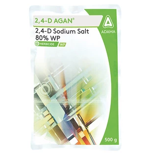

With Propaquizafop 10% Agil selectively controls grassy weeds in a wide range of broad-leaf crops like Soybean, Onion, Black gram, Chickpea, and more!
Technical Name: 2,4-D Sodium Salt 80% WP
Major Crops: Cereals (e.g., wheat, barley), Maize, Sugarcane, Rice, Turfgrass
Mode of action: 2,4-D Agan is absorbed by leaves and is translocated through the plant. As a systemic herbicide, it interferes with the plant’s growth regulation, ultimately causing uncontrolled and lethal growth in broad-leaved weeds while leaving grassy crops largely unaffected.
Target Pest:
2,4-D Agan is a selective systemic post-emergence herbicide. The product is used for the control of annual and perennial broad-leaved weeds in a wide range of crops.
Presentation Available: 500gms
Company: Adama